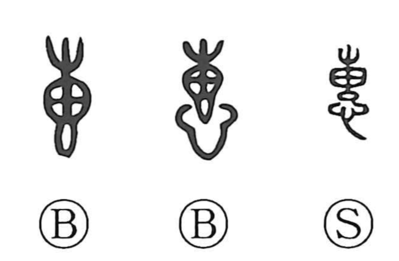

恵

Kun: megumi, megumu | On: kei, e
favor ・ grace ・ kindness ・ to show mercy
Explanation
The character goes back to the older form 惠. In the later form 恵, the element shaped like 吏—understood here as the figure of a tied-up sack—serves only as a phonetic that carries the on-reading kei; it contributes no meaning. Bronze inscriptions still write the original 惠. In early usage, 惠 more often described a heart drawn tight and on guard, hence senses like being reverent and admonishing. From that vigilant tension of the mind the meaning softened over time to showing favor and tenderness: to have mercy, to cherish, and to be kind.